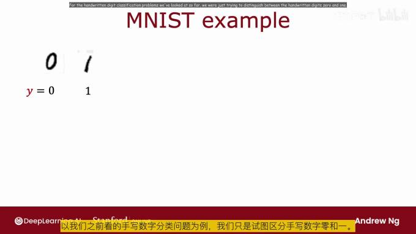
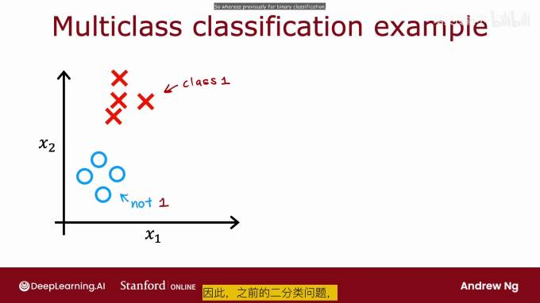
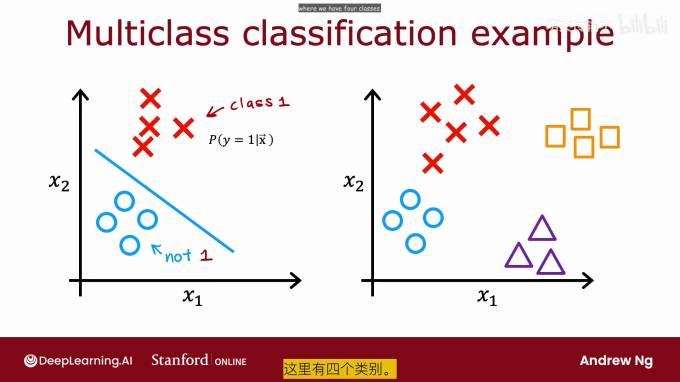
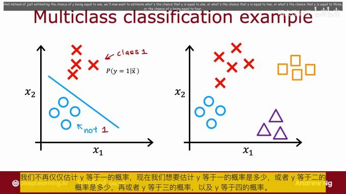
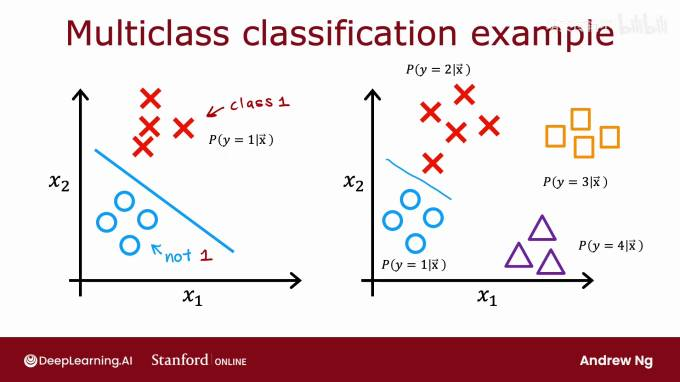
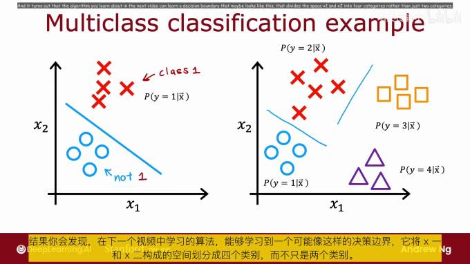

00:02多分类问题，指的是可以有超过两种输出标签的分类问题。
00:11所以，不只是零或一。
00:14我们来看看这息味着什么。
00:16我们来看有这息咪看什么。
00:17以我们之前看的手写数字分类问题为例，我们只是试图区分手写数字零和一。

00:27但如果你要识别信封上的邮政编码，那实际上会有十个你可能想要识别的数字。
00:37或者，在第一门课中你看到过一个例子，如果你想对患者可能患有三种或五种不同疾病中的哪一种进行分类。
00:51那也会是一个多分类问题。
00:54还有一件我投入大量精力研究的事情，就是工厂制造零件的视觉缺陷检测，你可能会查看一家制药公司生产的药丸图片，并试图判断它是否有划痕缺陷、变色缺陷或是缺口缺。
01:16这同样会有多个类别，或者说你可以将这颗药丸判定为多种不同类型的缺陷。
01:24所以，多分类问题仍然是一个分类问题，因为 y 只能取少量离散的类别。
01:36但现在可以取超过两种可能的值。
01:42因此，之前的二分类问题，你可能有一个像这样的数据集，包含特征 x 一和 x 二，这种情况下，逻辑回归会拟合一个模型来估计给定特征 x 时 y 等于一的概率，因为 y 要么是零，要么是一。丨。


02:03而对于多分类问题，你将会有一个看起来像这样的数据集，圆圈代表一个类别，叉号代表另一个类别，三角形代表第三个类别，我们不再仅仅估计 y 等于一的概率，现在我们想要估计等于一的概率是多少，或者等于二的概率是多少，再或者 y 等于三的概率，以及 y 等于四的概率。



02:41结果你会发现，在下一个视频中学习的算法，能够学习到一个可能像这样的决策边界，它将 x 一和 x 二构成的空间划分成四个类别，而不只是两个类别。

02:58以上就是多分类问题的定义。
03:02在下一个视频中，我们将学习 Softmax 回归算法，它是逻辑回归算法的推广。
03:11使用它，你将能够执行多分类问题。在那之后，我们会将 Softmax 回归应用到新的神经网络中，这样你也能训练一个神经网络来执行多分类问题。
03:29我们继续看下一个视频。